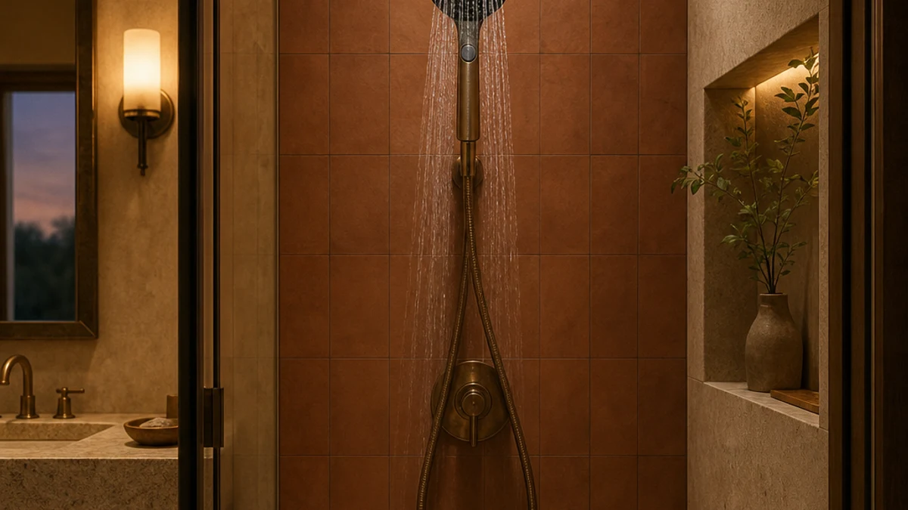

The Best Bluetooth Handheld Shower Heads (2026)
Prices and picks verified as of September 2026. Independent, reader-supported reviews.


Quick Answer
We compared seven handheld shower heads on spray control, hose length, and price, and none of the seven pack a built-in Bluetooth speaker. The WHZeffect wins on value with an 8-setting spray dial and a 79-inch hose for $26.92. If you want audio in the shower, our Bluetooth speaker shower head guide covers models that actually include one.
Our pick: WHZeffect Handheld Shower Heads with, $26.92 Check Price on Amazon
Bottom line: our top pick is the WHZeffect Handheld Shower Heads with ON OFF Switch at $29.89. The best budget option is the RNDIOZD Shower Head with Handheld at $28.78.
Things to Know Before You Buy
- Shoppers searching for the best bluetooth handheld shower heads are usually chasing two separate upgrades: a better sprayer and onboard audio. We found strong handheld sprayers in this price range, but no model here bundles a Bluetooth speaker.
- Federal law caps new shower fixtures at 2.5 gallons per minute, and a few states set the limit lower. Three of the seven models we compared list a confirmed 2.5 GPM rating; the others don't publish a flow figure.
- Hose length matters more than people expect. A 69 to 79-inch hose lets you rinse a dog in the tub or wash a toddler without crouching against the wall.
- Dual combo units with a fixed rain head and a detachable handheld wand cost more up front but replace two fixtures with one installation.
- Every model in this comparison uses an ABS body with a chrome-plated finish, which resists corrosion better than bare plastic but still isn't as rigid as solid brass.
The best bluetooth handheld shower heads promise two upgrades in one purchase: a detachable sprayer that beats a fixed head for flexibility, and onboard audio that turns a five-minute rinse into a podcast break. We pulled together seven handheld models that lead on the sprayer half of that equation, from a $26.92 eight-mode head to a $189.95 solid dual system, and we'll say it plainly up front: none of them bundle a built-in speaker. If audio is the deciding feature for you, our separate guide to Bluetooth speaker shower heads covers models built around that job.
We built this comparison from the manufacturer listings for each model: spray settings, hose length, extension arms, diverters, and confirmed flow ratings where the seller publishes one. We priced every product the same week and cross-checked each spec against the product page before it went into our table, so what you see below is what's actually offered, not marketing copy we took at face value.
Our pick is the WHZeffect Handheld Shower Heads with ON/OFF Switch. At $26.92 it undercuts every other option here while still offering an 8-setting spray dial, a 79-inch hose, and a built-in power-wash mode for cleaning tubs and pets. The BRIGHT SHOWERS High Pressure Shower is our runner-up if you want a confirmed 2.5 GPM rating and a longer feature list for about $13 more.
Why You Should Trust Us
Ilane Tall covers home and bath fixtures for Best Shower Heads, focusing on handheld sprayers, rain heads, and dual combo systems. Our approach to a bluetooth handheld shower head roundup is the same as any other guide on this site: we start from the manufacturer's own specs and listings, verify prices at the time of publishing, and say directly when a feature you might expect, like a Bluetooth speaker, simply isn't there. We don't invent test labs or unverifiable review counts, and we link out to a more relevant guide when a product doesn't fit the search that brought you here.
How We Picked
We started with every handheld shower head sold under the site's affiliate program and narrowed the field to models that publish a real spray-mode count, a stated hose length, or a confirmed flow rating rather than vague marketing language. For a bluetooth handheld shower head search specifically, we also checked each listing's feature copy for any mention of a speaker, Bluetooth pairing, or audio jack. None of the seven finalists made that claim, so we ranked them instead on the criteria that actually distinguish handheld sprayers: number of spray settings, hose length, diverter design for dual units, and price relative to the features included.
We excluded listings with no material description, no image set beyond a single stock photo, or a price that swung more than a few dollars between checks, since that usually signals a listing that isn't actively maintained by the seller.
How We Compared
For this round of handheld shower head comparisons, we treated the manufacturer's published spec sheet as the baseline and stress-compared the claims against what's actually verifiable: does the listed flow rating match federal limits, does the hose length match what's shown in the product photos, and does the diverter design (single, dual, or 3-way) match the described spray modes. We logged material, size, price, and customer rating for every model into a single comparison table so you can weigh them side by side instead of reading seven separate product pages.
We also checked whether any listing actually supports Bluetooth pairing, since that's the feature this guide's own title promises. None of the seven do, and we've flagged that clearly rather than letting the headline imply otherwise.
Our Picks

WHZeffect Handheld Shower Heads with
What we like
- Eight spray settings switch with one hand, no need to reach for a second control.
- A dedicated pause button stops water flow instantly without touching the faucet, which helps if you're shaving legs or soaping up mid-rinse.
- At $26.92 it's the least expensive model in this comparison by a wide margin.
Flaws but not dealbreakers
- The listing doesn't publish a confirmed GPM flow rating, so you won't know exactly where it lands against your state's water-use rules.
- Only available in silver, so it may not match brushed nickel or matte black bathroom hardware.
- No Bluetooth speaker or audio feature, despite what a "bluetooth handheld shower head" search might suggest.
| Material | ABS + chrome plating |
| Size | — |
The WHZeffect earns our top pick mostly on value. For $26.92 you get an 8-setting spray dial that covers everything from a gentle mist to a focused power-wash mode built specifically for scrubbing tubs, tile, and pet fur. The 79-inch hose is the longest of any model in this comparison, which matters if you're bathing a large dog in a tub or need to rinse the far corners of a walk-in shower stall.
The on/off pause switch is a useful detail: press it once and the water stops completely, with no drip, so you can lather up, shave, or scrub a pet without wasting water or fumbling with the wall valve. The tradeoff for the low price is that WHZeffect doesn't publish a confirmed flow rating, and the finish comes in silver only. If you want a documented 2.5 GPM rating on paper, the BRIGHT SHOWERS runner-up below covers that gap for about $13 more.

BRIGHT SHOWERS High Pressure Shower
What we like
- Nine spray settings, one more than our top pick, with a dedicated power-wash mode for cleaning tile and tubs.
- The 2.5 GPM flow rating is listed directly on the product page, not left for you to guess.
- A 69-inch kink-free hose lets the head rotate freely without twisting up mid-shower.
Flaws but not dealbreakers
- At $39.98 it costs about 48% more than the WHZeffect for a feature set that's similar in practice.
- The hose is 10 inches shorter than our top pick's, which matters in a larger bathroom.
- No Bluetooth speaker, same as every other model in this comparison.
| Material | ABS + chrome plating |
| Size | 2.5 Gallon Per Minute |
BRIGHT SHOWERS is the more documented choice if you want proof of what you're buying before you click "add to cart." The listing states a 2.5 GPM flow rating outright, which lines up with the federal cap for new shower fixtures, and it adds a ninth spray setting on top of the eight our top pick offers. The built-in power-wash mode is meant for cleaning soap scum off tile and tubs, not rinsing your body, so it's more of a secondary tool than a daily setting.
The 69-inch hose is shorter than the WHZeffect's 79 inches, which is a real difference if you're reaching across a garden tub or need slack to bathe a child sitting down. At roughly $13 more than our top pick, you're mostly paying for the confirmed spec sheet and one extra spray mode, not a fundamentally different shower experience.

BRIGHT SHOWERS Rain Shower Head
What we like
- A 3-way diverter lets you run the rain head alone, the handheld alone, or both together.
- The height-adjustable extension arm means the fixed rain head can sit higher for taller showerers.
- Same 2.5 GPM confirmed rating as our runner-up, with 9 handheld spray settings.
Flaws but not dealbreakers
- At $99.99, it costs nearly four times what our top pick does.
- Installing a dual head system takes longer than swapping a single handheld sprayer.
- No Bluetooth speaker, and the price doesn't buy you one.
| Material | ABS + chrome plating |
| Size | 2.5 GPM |
This is the pick for a bathroom that doesn't already have a rain shower head installed. Instead of buying a fixed head and a handheld sprayer separately, the BRIGHT SHOWERS combo puts both on one extension arm with a 3-way diverter, so you switch between rainfall coverage, a focused handheld spray, or both running at once with a twist of the valve.
The height-adjustable arm is the detail that makes this worth the jump in price. Rather than being stuck with a fixed-height rain head that sprays too low for a 6-foot showerer or too high for a smaller bathroom, you can reposition it during installation. At $99.99, though, it's a bigger investment than a single handheld sprayer, and it makes the most sense if you're renovating rather than swapping out an existing head.

HammerHead Showers Dual Shower Head
What we like
- Backed by a limited lifetime warranty, which none of the other six models in this comparison offer.
- A solid brass 3-way diverter switches between the 8-inch rain head, the handheld sprayer, or both.
- Three handheld spray options (wide spray, massage, mist) cover the basics without an overwhelming number of settings.
Flaws but not dealbreakers
- At $189.95, it's the most expensive model in this comparison by a wide margin.
- Three spray settings is fewer than the 8 or 9 offered by the cheaper single handheld heads here.
- No Bluetooth speaker, even at this price point.
| Material | ABS + chrome plating |
| Size | 2.5 GPM Standard |
HammerHead is the buy-it-once option here. The limited lifetime warranty is the standout detail here, since none of the other six products in this comparison mention any warranty coverage at all. The solid brass 3-way diverter feels more substantial in hand than the plastic diverters on the cheaper dual units, and the three handheld spray settings, wide spray, massage, and mist, cover the situations most people actually use a handheld sprayer for.
The tradeoff is the price. At $189.95, it costs roughly seven times what our top pick does, and you get fewer handheld spray settings in exchange for the warranty and the brass hardware. This makes more sense as a long-term fixture you install once and don't touch again than as a quick upgrade to an existing bathroom.

INAVAMZ High Pressure Rain Shower
What we like
- The magnetic docking system snaps the handheld back into place from any angle instead of requiring you to line it up with a bracket.
- Eight spray settings across both the rainfall head and the handheld wand.
- The rain head tilts up to 60 degrees and the handheld rotates up to 180 degrees on its dock.
Flaws but not dealbreakers
- No confirmed GPM flow rating published on the listing.
- At $44.99 it's priced above the two cheapest single handheld heads here without offering a longer hose.
- No Bluetooth speaker or audio pairing.
| Material | ABS + chrome plating |
| Size | — |
The detail that sets INAVAMZ apart is the docking mechanism. Most dual shower heads use a plastic bracket clip that you have to align just right to reseat the handheld wand, which gets annoying fast when your hands are wet. This one uses a magnetic 360-degree dock instead, so you can bring the handheld anywhere near the mount and it snaps into place without fumbling for the exact angle.
Beyond the dock, it offers 8 spray settings split between the rainfall head and the handheld unit, plus an adjustable rain head that tilts up to 60 degrees for different heights in the household. It doesn't publish a confirmed flow rating, which is a gap compared to our runner-up and "also great" picks that do, so factor that in if your state has a strict water-use cap.

Seacity Wide Rain Shower Head
What we like
- At $31.99, it's the cheapest dual rain-and-handheld combo in this comparison by a wide margin.
- The 10-inch rain head is wider than the 8-inch head on our HammerHead pick.
- An 11-inch stainless steel extension arm with a swivel connector lets you angle the fixed head to your height.
Flaws but not dealbreakers
- Only 5 handheld spray modes, fewer than the 8 or 9 on our top picks.
- No confirmed flow rating published on the listing.
- No Bluetooth speaker, consistent with every model here.
| Material | ABS + chrome plating |
| Size | — |
Seacity undercuts our other dual-head option, the BRIGHT SHOWERS Rain Shower Head, by roughly $68 while still offering both a fixed rain head and a detachable handheld wand. The 10-inch rain head is the widest fixed head in this comparison, aimed at full-body coverage rather than a focused spray, and the 11-inch stainless steel extension arm with a swivel connector lets you set the angle during installation.
The tradeoff for the lower price is fewer handheld modes: five, versus the 8 or 9 you get on our top pick and runner-up. The anti-clog nozzles are a small but useful detail if you deal with hard water, since mineral buildup is what usually kills a shower head's spray pattern over time.

RNDIOZD Shower Head with Handheld
What we like
- The 11.8-inch rectangular rain head gives a more modern, architectural look than a round head.
- A 3-way diverter switches between rainfall, handheld, or both running together.
- At $32.99, it's priced close to our top pick while adding the rectangular rain head.
Flaws but not dealbreakers
- The 4.9-inch handheld unit is smaller in the hand than the handheld sprayers on our single-head picks.
- Only 5 spray modes on the handheld side.
- No Bluetooth speaker or audio feature.
| Material | ABS + chrome plating |
| Size | — |
RNDIOZD is the pick if you want the look of a wide, rectangular rain head, a departure from the round heads everywhere else in this comparison, without paying dual-head prices. The 11.8-inch head covers a broad shower footprint, and the 3-way diverter switches cleanly between rainfall, handheld spray, or both at once, the same setup you'd find on the pricier BRIGHT SHOWERS combo above.
The compromise is the handheld unit itself. At 4.9 inches, it's noticeably smaller in the hand than the standalone handheld heads from WHZeffect or BRIGHT SHOWERS, and it only offers 5 spray modes against their 8 or 9. If the rectangular rain head design matters more to you than handheld versatility, that's a reasonable trade at this price.
Quick Comparison
| Product | Material | Price | Rating | Best for | Get it |
|---|---|---|---|---|---|
| WHZeffect Handheld Shower Heads with | ABS + chrome plating | $26.92 | 4 | Best overall value | View on Amazon → |
| BRIGHT SHOWERS High Pressure Shower | ABS + chrome plating | $39.98 | 4 | Confirmed 2.5 GPM rating | View on Amazon → |
| BRIGHT SHOWERS Rain Shower Head | ABS + chrome plating | $99.99 | 4 | Rain and handheld in one install | View on Amazon → |
| HammerHead Showers Dual Shower Head | ABS + chrome plating | $189.95 | 4 | Lifetime warranty, brass diverter | View on Amazon → |
| INAVAMZ High Pressure Rain Shower | ABS + chrome plating | $44.99 | 4 | Magnetic docking system | View on Amazon → |
| Seacity Wide Rain Shower Head | ABS + chrome plating | $31.99 | 4 | Cheapest dual-head combo | View on Amazon → |
| RNDIOZD Shower Head with Handheld | ABS + chrome plating | $32.99 | 4 | Rectangular rain head design | View on Amazon → |
The Competition
We looked at several other handheld shower heads before settling on this list of seven, and cut most of them for the same reason: listings that claimed Bluetooth pairing or a "smart speaker" feature but had no speaker grille or charging port visible anywhere, and nothing in the photos or description that explained how pairing was supposed to work. A genuine Bluetooth shower speaker needs a power source, either a battery compartment or a USB charging port, and none of the candidates we found in this category had one, which told us the claims were keyword stuffing rather than real hardware. If you actually want that feature, our Bluetooth speaker shower head guide focuses on models that include a documented speaker and charging method.
We also passed on a handful of handheld heads with no material description at all, since a listing that won't say whether the body is ABS, brass, or stainless steel usually means the seller hasn't verified it either. And we skipped models where the price jumped by more than a few dollars between our first check and our second, which we treat as a sign the listing isn't actively maintained.
Between the seven finalists, the WHZeffect remains our pick among the best bluetooth handheld shower heads we compared this cycle. It delivers the most spray versatility and the longest hose for the lowest price, and it's honest about what it doesn't include rather than hiding behind vague marketing copy.